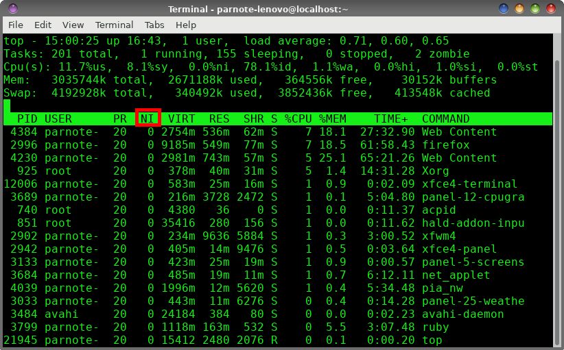
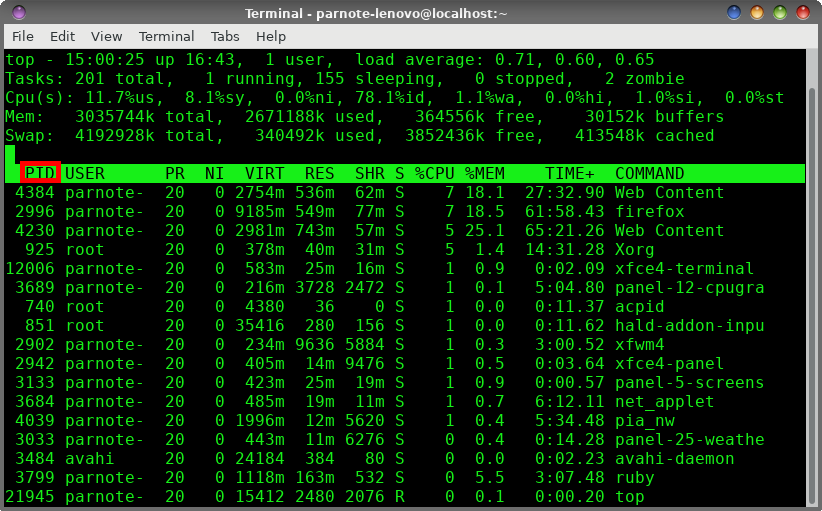

|
by Paul Arnote (parnote)
Believe it or not, the Linux system assigns the same priority to nearly every running process (program). There are a few exceptions, but the vast majority of the running processes are assigned the same priority -- zero (0). In this way, every running process has pretty much the same access to the core Linux system as every other.
Most of the time, this arrangement works out well. But sometimes, you might want a process to have more or less priority. You might want it to have a higher priority so that the system assigns more resources to it. Or, you might have a program that is consuming more resources and is slowing down other processes, causing an overall system slowdown. Some processes might not be as important to you, so assigning them a lower priority saves CPU time and cycles for those processes that are more important. Similarly, the opposite might occur, where you might want a process to have a higher priority because of its relative importance to you at that particular moment.
Fortunately, there are two commands in Linux that allow you to change a process's priority. Those commands are nice and renice. To use either command, you must have administrator access (be the root user). The priority scale runs from -20 (highest priority) to 19 (lowest priority). It's important to remember that negative numbers have higher priority, and positive numbers represent lower priority.

Above is a screenshot of the top command run in a terminal window. Notice that the fourth column from the left is labeled "NI." That is the priority, or "nice" level, of each process. In this particular screenshot, the "nice" level for all the processes is zero ("0"), the default value.
If you look long enough (or in a bigger terminal window), you will see processes that belong to the root user that have a nice/priority level of -20. You would be ill advised to change the nice/priority level of these processes. Many of these processes are vital to your system running smoothly. You really don't want to mess with these vital processes.
It helps to think of the nice command as a sort of launcher. Let's just say, for the sake of argument, that I wanted to launch Firefox with a "nice" level of 10. All I would have to do is launch Firefox like this:
nice -10 firefox&
Once Firefox launches, rerun the top command. You should see Firefox's "nice" level is now changed to 10, indicating that it is running with a lower priority. Similarly, if I wanted to launch Firefox with an increased priority or "nice" level, I would enter the command like this:
nice --10 firefox&
Rerunning the top command after Firefox launches, you should see that Firefox's "nice" level has been set to -10. This means Firefox is running with higher priority.
Take note of the slight difference in the commands. In the first nice command example, we lowered Firefox's priority with -10. This is a positive 10. The dash before the "10" is just the signal to the command that this is a command parameter. Notice in the second nice command example, where we raised Firefox's priority to -10 with a --10. The first dash indicates a command parameter, and the -10 is the actual value we passed to the command. Also, if you don't specify a "nice" level, nice will default to a nice level of 10. The ampersand at the end of each line pushes the task to the background and frees up the command line for other uses.
So what if you have a process that's already running and you want to change its nice level? That's what renice is for.

The format is slightly different for the renice command. Instead of specifying a program's name, you use the PID (process ID) number. In the screenshot above, you can find the PID in the first column of the output from the top command. Don't forget that you will need to have administrative privileges (be the root user) to run these commands.
So, if I want to change the nice level of Firefox, I can issue the command like this:
renice -n 15 -p 2996
The -n parameter is the new nice level I want to apply to the Firefox process, and the -p parameter is the PID of the currently running Firefox process. This particular command will decrease/lower the priority/nice level of Firefox.
Similarly, if I want to increase/raise the priority/nice level of Firefox, I would enter the command like this:
renice -n -15 -p 2996
It really is that easy.
If you have multiple users on a system, you can also "renice" all of the processes belonging to a particular user or group. Instead of the -p parameter and the PID, use -u username for a particular user, or -g groupname for a particular group of users.
Summary
With the nice and renice commands, you easily can tweak your computer to get maximum performance. You don't have to "just accept" the priority that the Linux system assigns to each process.
Just one additional note, though. You can lower the nice level/priority of a process as a regular user, but you have to have administrative privileges (be the root user) to raise the nice level/priority of a process. However, I find that it's much easier to just always change the priority of a process as the root user. This helps eliminate having to remember when you have to have administrative privileges and when you don't. If you always execute the commands with administrative privileges, you never find yourself in a position where it works sometimes and not at other times.
Now, go forth and make the naughty be nice.
|